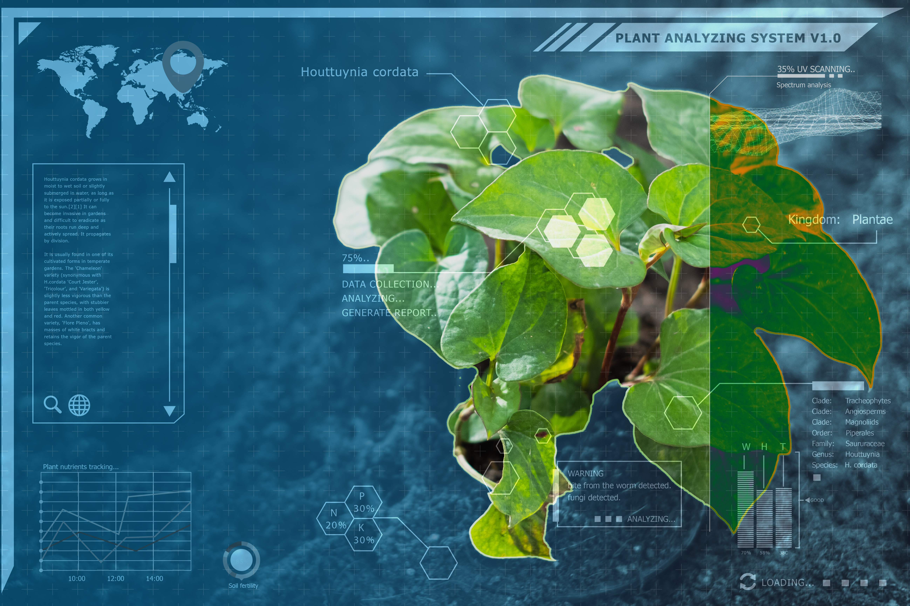
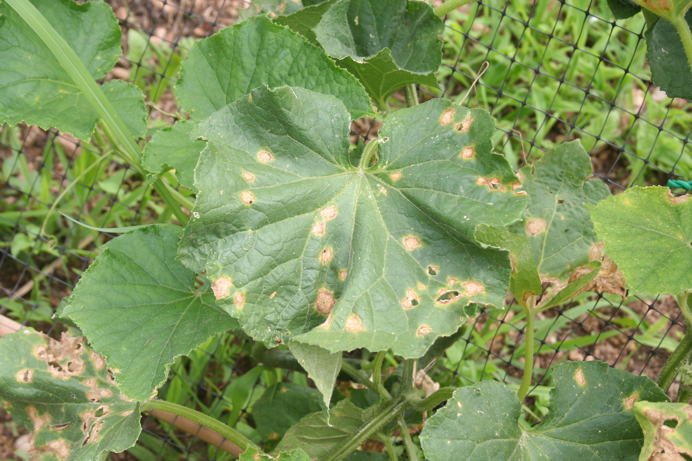

Welcome to the Taiwan Pesticide Consultation Website
Provide Pesticide Solutions Glabally
Unravel the Intriguing Mysteries of plant Pathology: Explore the underlying causes, diverse symptoms, and profound impact on plant health,unraveling the mysteries that lie within.
Website Introduction
Explore a whole new world of plant diseases
Allow us to introduce our website, a dedicated platform for knowledge sharing and interactive Q&A in the realm of pesticides. By constructing a detailed pesticide knowledge map, we integrate information on types, mechanisms, usage methods, safety precautions, and more, providing users with comprehensive and accurate pesticide knowledge.

2000+
200000+
2+
Our Service
We have an unwavering commitment to obtaining and consolidating data from reputable and authoritative sources to ensure the accuracy and credibility of the information provided on our website. We maintain the timeliness and completeness of our database by continuously updating and supplementing data from various sources.

Detailed Disease Introduction
Our Services offers a Detailed DiseaseIntroduction, exploring the correlation between diseases and specific crops. We delve into which crops are susceptible to common diseases, providing farmers crucial insights for prevention and management.
Detailed Crop Introduction
Our Services offers a Detailed CropIntroduction, highlighting the susceptibility of various crops to diseases.We explore the common ailments that effect crop health, their symptoms, and management techniques, aiming to empower farmers with knowledge for disease prevention.
Detailed introduction To Pesticides
Our Services features a DetailedIntroduction To Pesticides, focusing on the diseases pesticides can prevent. We outline the effectiveness of pesticides in safeguarding crops, ensuring healthy growth and productivity.
Our Promise

Plant Disease Information
We provide extensive and practical plant disease information, covering various plant types and disease categories, to help users better protect and manage their plants.
Valuing User Feedback
We value user feedback and opinions, which help us continuously improve and enhance our services to better meet users' needs.

Updates and Improvements
We continuously update and expand our content library, and improve diagnostic models to ensure users always receive the most accurate and up-to-date information, enhancing their user experience.

Prompt Issue Resolution
If users encounter any issues while using our website or have any suggestions for improvement, our team will promptly respond and address their concerns to ensure users have a positive experience.

 Guizhou University,
Guiyang,
Guizhou,
China
Guizhou University,
Guiyang,
Guizhou,
China
 +86 17885726450
+86 17885726450 wangqi@samlab.cn
wangqi@samlab.cn